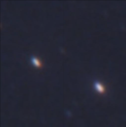
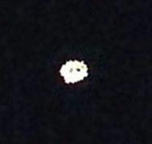
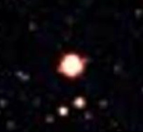

Starzone Star Searcher
-

Achernar
Achernar is the ninth brightest star in the sky!
Constellation: eridanus
Coordinates: 01h 37m 42.8s, −57° 14′ 12″ -
Alioth
Alioth is the brightest star in the constellation of Ursa Major!
Constellation: ursa major
Coordinates: 12h 52m 25.20s, +55° 52′ 45.2″ -
Atlas
Achernar is a triple star system named for the Greek Titan Atlas!
Constellation: taurus
Coordinates: 01h 37m 42.8s, −57° 14′ 12″ -
Bellatrix
Latin for 'female warrior'; applied to this star in the 15th century.
Constellation: orion
Coordinates: 01h 37m 42.8s, −57° 14′ 12″ -
Chalawan
Named after a mythological crocodile king from a Thai folktale.
Constellation: ursa major
Coordinates: 01h 37m 42.8s, −57° 14′ 12″ -
Electra
Electra was one of the Pleiades sisters in Greek mythology.
Constellation: taurus
Coordinates: 01h 37m 42.8s, −57° 14′ 12″ -
Gacrux
Gacrux is the nearest class M giant star to the Sun!
Constellation: crux
Coordinates: 01h 37m 42.8s, −57° 14′ 12″ -
Maia
Maia was one of the Pleiades sisters in Greek mythology.
Constellation: taurus
Coordinates: 01h 37m 42.8s, −57° 14′ 12″ -
Muphrid
This star is used as a stable anchor point with which to classify other stars.
Constellation: bootes
Coordinates: 01h 37m 42.8s, −57° 14′ 12″ -
Sirius
Sirius is the brightest star in the night sky.
Constellation: canis major
Coordinates: 06h 45m 08.9173s, −16° 42′ 58.017 -

Situla
Situla is a Latin word meaning "bucket" or "water jar.
Constellation: aquarius
Coordinates: 06h 45m 08.9173s, −16° 42′ 58.017 -

Tarazed
Tarazed's magnitude makes it readily visible to the naked eye at night.
Constellation: aquila
Coordinates: 01h 37m 42.8s, −57° 14′ 12″ -
Veritate
Veritate is Latin for 'where there is truth'.
Constellation: andromeda
Coordinates: 01h 37m 42.8s, −57° 14′ 12″ -
Wezen
In Bayer's Uranometria, Wezen is in the Great Dog's hind quarter.
Constellation: canis major
Coordinates: 01h 37m 42.8s, −57° 14′ 12″ -

Zosma
Zosma has a stellar classification of A4 V - it is larger and hotter than the Sun!
Constellation: leo
Coordinates: 01h 37m 42.8s, −57° 14′ 12″